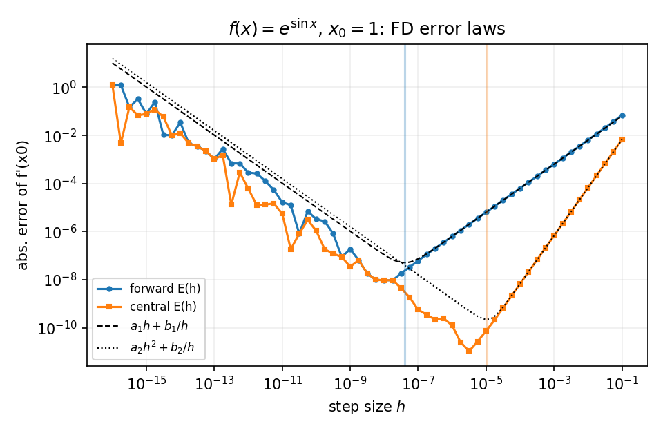
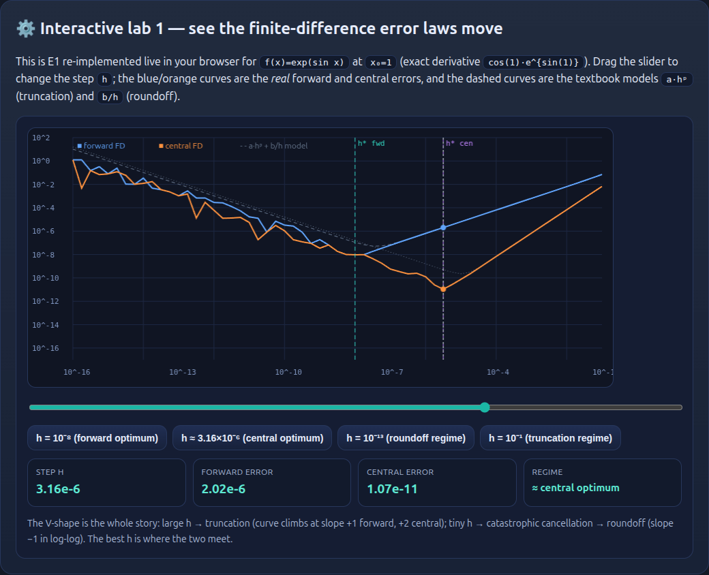
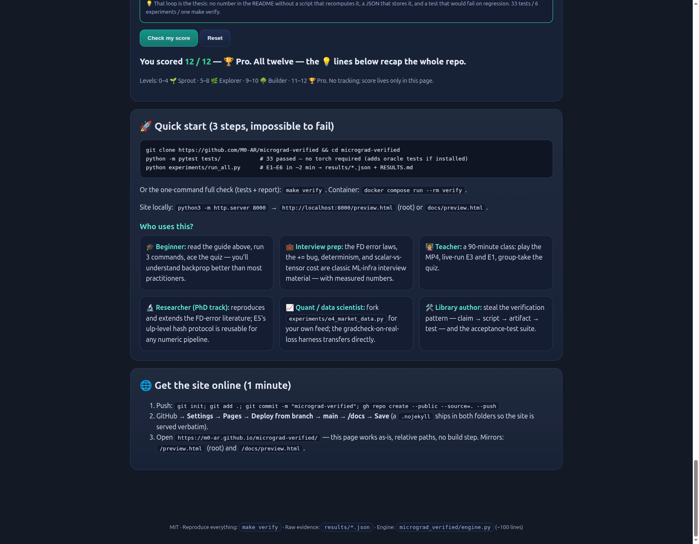

🎬 Demo video + real screenshots
GitHub READMEs strip <video>, so the README shows a GIF and this page plays the full MP4. Both are generated from real run outputs — the actual test run, the actual experiment run, and the actual E1 figure.
Download demo.mp4 · demo.gif (README version, 122 KB)


E1 error laws. Truncation climbs as a·hᵖ, roundoff falls as b/h — the V shape is the whole story of gradient checking.

The interactive lab. Drag h, watch the forward & central errors move — computed live in your browser with the same formulas.

The quiz. 12 questions, zero → pro, instant explanations for every answer.
🌱 Beginner guide — read this and you are a professional
One idea at a time, each with a real measured number you can check yourself. By the end, you will know more than most interview candidates.
f(x)=exp(sin x) at x₀=1: how much does f move if x moves a little? Exactly f'(1)=cos(1)·e^{sin(1)}≈2.3333. Every gradient in deep learning is this, glued together at scale.(f(x+h)−f(x))/h; central (f(x+h)−f(x−h))/(2h). Nudge too big → truncation error ≈ a·hᵖ. Nudge too tiny → roundoff ≈ b/h. Measured optima: h=1e-8 (forward) and 3.16e-6 (central). E1 fits the textbook slopes +1.01 / +2.00 with r²=1.0000.y=(a+b)·c is nodes connected by operations. Each edge has a local derivative (∂out/∂in). The chain rule multiplies local derivatives along every path from y back to a leaf — and adds the contributions of different paths.grad=1 (how much y changes when y changes — trivially 1) and walk nodes in reversed topological order. Each node pushes grad × local-derivative into its children. That's all backpropagation is.= instead of +=. If a leaf is used twice, y=a+a, the correct gradient is 2.0; overwriting (=) gives 1.0. Measured: 64% of random graphs get corrupted — and gradient checking catches 100% of the corrupted ones. E3 is the forensics.|analytic−numeric| ≤ 1e-5 + 1e-3·|numeric|. It is necessary but not sufficient: it can't see bugs where forward and backward are wrong together, or kinks like relu'(0). That's why this repo also uses hand-computed gradients and a PyTorch oracle.depth^0.52 (r² 0.98) — a random walk of roundoff, ≈10⁷× below the threshold. E2.1.8e-7 relative. And the honest part: the little model's test accuracy is statistically indistinguishable from always predicting the majority class (p∈[0.24,0.85]) — reported as a null result. E4. This is a verification demo, not investment advice.set; iteration order follows memory addresses, so different processes can sum gradients in different orders: measured 4/60 graphs differ by 1 ulp across processes. Storing an ordered tuple: 0/60. E5 — the kind of defect "it worked on my machine" never sees.git clone → pip install -e . → make verify. Claim → script → artifact → test: that loop is the entire thesis of this repository.New to the field? Read the README after this page — it's the full paper-style manual, and it links back here for the interactive parts.
⚙️ Interactive lab 1 — see the finite-difference error laws move
This is E1 re-implemented live in your browser for f(x)=exp(sin x) at x₀=1 (exact derivative cos(1)·e^{sin(1)}). Drag the slider to change the step h; the blue/orange curves are the real forward and central errors, and the dashed curves are the textbook models a·hᵖ (truncation) and b/h (roundoff).
The V-shape is the whole story: large h → truncation (curve climbs at slope +1 forward, +2 central); tiny h → catastrophic cancellation → roundoff (slope −1 in log-log). The best h is where the two meet.
⚙️ Interactive lab 2 — trigger the += bug yourself
The classic autograd mistake: writing grad = ... instead of grad += .... Press both buttons on each graph. The finite-difference truth comes from independently nudging the input — exactly what a gradient check does.
Graph A: y = a + a, a = 3
One leaf feeds two edges. True dy/da = 1+1 = 2.
Graph B: y = exp(a) + a, a = 1
Different paths, different sizes. True dy/da = e¹+1 ≈ 3.7183.
In E3, the same bug corrupted 64% of 100 random fan-out DAGs (worst deviation 1.99 — near-total), and gradcheck caught 100% of the corrupted graphs. The 36% clean cases are graphs where no shared subexpression gets a second gradient path — which is why the bug survives casual testing.
📊 The 6 experiments — what each proves
| # | Proves | Verified numbers |
|---|---|---|
| E1 | FD error obeys the textbook laws; optimal h is predictable | slopes +1.006 / +1.9998, r²=1.0000; h* = 1e-8 / 3.16e-6 |
| E2 | The engine survives adversarial randomness, not just toy examples | 200/200 pass; error ~ depth^0.52 (r² 0.98); worst bucket median 1.4e-10 |
| E3 | = vs += quantified: real, common, and detectable | a+a: 2.0 vs 1.0; 64% of DAGs corrupted; 100% of the corrupt caught |
| E4 | Gradients hold on real data; no hype — null reported honestly | gradcheck ≤ 1.8e-7; accuracy ≈ majority baseline (p 0.24–0.85) |
| E5 | Bitwise cross-process reproducibility is achievable (ordered ≠ set) | set: 4/60 graphs differ by 1 ulp; ordered: 0/60, one hash in 3/3 |
| E6 | Scalar-per-node cost, measured against production autograd | ≈0.9 µs/node vs ≈3.8 (scalar torch) at L=4096; 588 B/node |
Full tables, threats-to-validity, and raw JSON evidence: see the README §4 and results/.
🧩 Quiz: Scratch → Pro (12 questions)
Pick one answer per question. You get instant right/wrong + why. Every answer is checkable against the experiments above or the README.
Levels: 0–4 🌱 Sprout · 5–8 🌿 Explorer · 9–10 🌳 Builder · 11–12 🏆 Pro. No tracking; score lives only in this page.
🚀 Quick start (3 steps, impossible to fail)
git clone https://github.com/M0-AR/micrograd-verified && cd micrograd-verified python -m pytest tests/ # 33 passed — no torch required (adds oracle tests if installed) python experiments/run_all.py # E1–E6 in ~2 min → results/*.json + RESULTS.md
Or the one-command full check (tests + report): make verify. Container: docker compose run --rm verify.
Site locally: python3 -m http.server 8000 → http://localhost:8000/preview.html (root) or docs/preview.html.
Who uses this?
experiments/e4_market_data.py for your own feed; the gradcheck-on-real-loss harness transfers directly.🌐 Get the site online (1 minute)
- Push:
git init; git add .; git commit -m "micrograd-verified"; gh repo create --public --source=. --push - GitHub → Settings → Pages → Deploy from branch → main → /docs → Save (a
.nojekyllships in both folders so the site is served verbatim). - Open
https://m0-ar.github.io/micrograd-verified/— this page works as-is, relative paths, no build step. Mirrors:/preview.html(root) and/docs/preview.html.